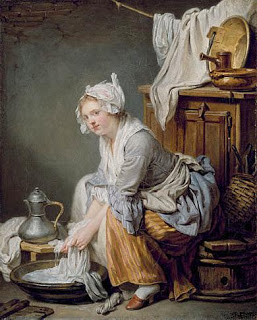

Bava Kamma 82 - Ezra Leading Jews back to the Land of Israel

After the destruction of the first Temple and the seventy years of exile in Babylon,
Ezra led the Jews back to Israel. To ensure the successful settling of the Land, he enacted ten regulations.
These included
* People should read from the Torah scroll during the Minchah service on Shabbat, and also every Monday and Thursday
* The courts to hold regular sessions on Monday and Thursday
* The people should do their laundry on Thursday, to better prepare for Shabbat
* People should eat garlic on Friday night because garlic increases semen
* Women should rise early on Friday morning and bake so that bread would be available to the poor
* Peddlers of perfumes should circulate in towns to make adornments available to women.
Art: The Washing by Jean Baptiste Greuze